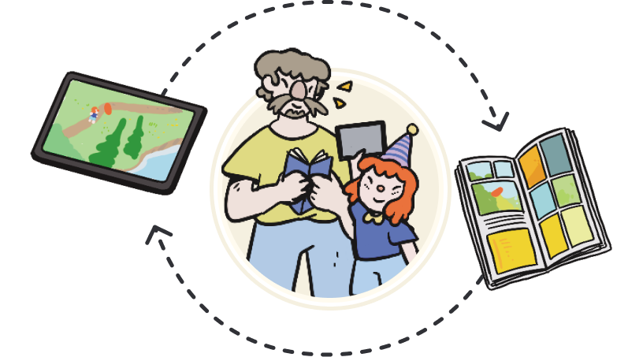

Dans Les Pas De Mïa
End of year project - UNITY - Androïd - 2024 (3 months)
Presentation of the project

I worked on "Dans Les Pas De Mïa" during my Master 1 at CNAM ENJMIN. In this game you help Mïa invite her friends to her birthday party through exploration and mini-games. It is meant to be played by a child-parent duo where one plays on a tablet and the other on a book provided with the game.
The development spanned three months, during which I also attended to my courses and developed a second end of year project "Disco Gecko" . The aim of these final Master 1 projects was to create a unique 10-minute experience in a team with students of different specializations.
The team
Features
I developed many key features : a chapter system allowing to start from different points of the game, a dialogue system with a tool to facilitate their integration, 3 mini-games, and implemented all the UI.
Dialogue Tool
As I was working simultaneously on another project as well as attending to my courses, we decided to delegate the integration of the dialogues to the game designers through a tool.
The dialogue tool exploits the Scriptable Objects (SO) of Unity. Each NPC has its own SO containing his name, his emotions (with associated portraits variants), and its dialogue per chapter. Each Dialogue is also a Scriptable Object and is a succession of Lines. Finally, a Line contains a character speaking, an emotion that determines which portrait of the character will display, a text field and also an event. The event is stored in a separate SO to easily make specific interactions happen during the dialogue while restraining dependencies.
This tool proved to facilitate the integration of dialogue and supported each of our cases. To make pop up appear during the conversation, we made specific NPCs who would use a specific UI when talking. This way, we just had to choose these specific NPCs as speakers in a dialogue to display pop ups. Every dialogue or popups you can see in the game were made the exact same way using this tool.
Moreover, as most members of the team were not used to versionning and Unity, I and the other programmer taught them how to use the engine and git so they could be autonomous. We also asked them to make Pull Request. With those we avoided bugs, we oversaw their changed and taught them as much as possible on the workflow.
Links
Itch.io page : https://marine-mousset.itch.io/dans-les-pas-de-mia
Oral presentation: https://www.youtube.com/live/f4gjlVhe6hM?t=4527s
Full Game demonstration: https://youtu.be/U35ojNCEFzc